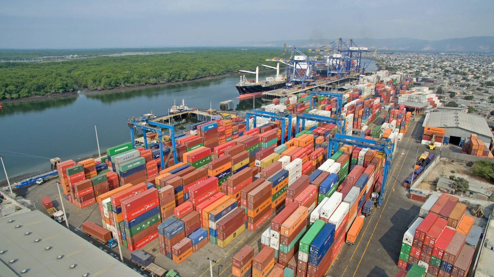

Acuerdos comerciales
CEPA con Emiratos Árabes Unidos, SECA con Corea del Sur, TLC con Canadá y una primera ronda con República Dominicana amplían el acceso a nuevos mercados para la oferta exportable ecuatoriana.
Previsiones Económicas 2026-2030 · Banco Central del Ecuador
El Banco Central revisó al alza su previsión de crecimiento para 2026, de 2,5% a 2,7%, con la información más reciente de actividad económica, y proyecta una expansión promedio de 2,5% anual para 2027-2030, sostenida por la demanda interna más que por el sector exportador. El ajuste no es un cambio de tendencia: es la confirmación de que la economía sostuvo en el primer semestre de 2026 el mismo dinamismo que mostró en 2025, cuando el PIB creció 3,7%. Los indicadores de corto plazo confirman ese ritmo: el Indicador de Actividad Económica Mensual (IMAEc) creció 2,2% interanual en junio, y la confianza empresarial se mantiene en zona optimista por quinto mes consecutivo.
PIB 2026
2,7%
PIB nominal de USD 136.017 millones; en cadena monetaria (real), USD 120.389 millones.
Promedio 2027-2030
2,5%
Con un pico de 2,8% en 2028 y una desaceleración gradual hasta 2,2% en 2030.
PIB per cápita 2026
6.599USD
+1,9% frente a 2025; llegaría a USD 7.054 en 2030 — un crecimiento promedio de apenas 1,7% anual.
Previsión del PIB: tasa de variación anual
%Fuente: Banco Central del Ecuador, Programación Macroeconómica 2026-2030, septiembre 2026.
Quién empuja el crecimiento
La demanda interna aporta 1,5 p.p. de los 2,7 p.p. de 2026; la demanda externa (exportaciones) aporta solo 1,2 p.p., y esa brecha se amplía hacia 2030.
Comercio exterior 1S2026
El superávit comercial cayó 43,9% en el primer semestre, de USD 4.166 millones a USD 2.339 millones, porque las importaciones no petroleras crecieron 11,9% frente a 1,1% de las exportaciones no petroleras.
Voz oficial
Daniel Noboa Azín
Presidente de la República del Ecuador
El presidente Noboa resaltó que las decisiones adoptadas han permitido ordenar las finanzas públicas y sentar las bases para la ejecución de infraestructura. En recientes declaraciones, afirmó que este es un año de crecimiento impulsado, entre otros, por el sector de la construcción:
“Estamos contentos, estamos optimistas con los números que hemos visto últimamente de la economía y viendo que ajustamos lo que había que ajustar, pusimos en orden la casa y ahora es momento de obra.”
El presidente además ha indicado que las políticas públicas orientadas al apoyo de emprendedores y sectores vulnerables han influido de manera directa en el incremento de las ventas y en la circulación de efectivo. Al evaluar el impacto de estas medidas, Noboa señaló que “al entender estos elementos positivos de la economía se logra un mejoramiento muy claro en las ventas, muy claro en la cantidad de circulante que hay”, puntualizando además que “se ve una economía sólida, se ve una economía más estable”.
Foto: Isaac Castillo / Presidencia de la República del Ecuador
IMAEc (jun-26)
+2,2% interanual, con el componente no petrolero (+2,3%) como principal motor; el acumulado del semestre es +2,0%.
Confianza empresarial (IEE)
53,2 puntos, quinto mes en zona de mayor confianza (>50). Construcción lidera con 57,5 puntos; comercio cae a 49,5, zona de menor confianza.
Construcción
Producción de cemento +11,8% y despachos +14,0% (ene-jul) — contrasta con la contracción de 2024 (-5,6% y -8,3%) y la recuperación más moderada de 2025 (+5,7% y +7,6%).
Generación eléctrica
Supera los 3.300 GWh mensuales en julio, cerca de máximos históricos — normalización tras la crisis energética de 2024.
Las ventas acumuladas de enero a junio llegaron a USD 137.000 millones (+10,1%), lideradas por comercio, manufactura y servicios, que juntos concentran el 76,2% del total.
Crédito al sector privado
+10,4%
A julio de 2026, en camino al 10,9% previsto para el cierre del año.
Captaciones
+10,9%
Se desaceleran desde 17,9% (jul-25) — el sistema financiero madura hacia un ritmo más sostenible.
Monto de operaciones activas
+9,9%
Ene-jul 2026, impulsado por consumo (+14,9%), microcrédito (+19,5%) e inmobiliario (+35,4%).
Capítulo siguiente
Factores que inciden en el crecimiento
El crecimiento de mediano plazo descansa en tres motores: el consumo de los hogares, la inversión (FBKF) y, en menor medida, las exportaciones no petroleras. El crédito privado y el resultado fiscal acompañan con una desaceleración y consolidación graduales, sin sobresaltos.
Cuenta corriente 2026
4.587M USD
3,4% del PIB — cae 39,9% frente a 2025 (USD 7.632M).
Inflación 2026
2,1%
Pico de 2,2% en 2027, antes de converger a 0,9% en 2030.
Crédito al sector privado
10,9%
Crecimiento previsto para 2026; se desacelera de forma ordenada hasta 6,8% en 2030.
Saldo de la cuenta corriente
USD MFuente: Banco Central del Ecuador, Programación Macroeconómica 2026-2030, septiembre 2026.
Consumo de hogares
+3,3% / +2,8%
2026 y promedio 2027-2030. Sostenido por remesas y crédito de consumo.
Inversión (FBKF)
+5,8% / +2,4%
2026 y promedio 2027-2030. Impulsada por construcción, vivienda y obra pública.
Exportaciones
+3,8% / +1,7%
2026 y promedio 2027-2030. El componente más volátil del escenario.
Precio de exportación del crudo
USD 75,3/barril en 2026 (+28,5%), pero converge a USD 58,2/barril en 2030 conforme se normalizan los precios internacionales.
Producción de crudo
Sube a 168,3 millones de barriles en 2026 (+4,7%), recuperándose de las disrupciones de 2025 en el OCP y el SOTE.
Balanza petrolera
El superávit cae de USD 1.104 a USD 834 millones en 2026: los derivados importados se encarecen 40% y compensan la mejora de los ingresos por exportación de crudo.
Crédito al sector privado y captaciones
%Fuente: Banco Central del Ecuador, Programación Macroeconómica 2026-2030, septiembre 2026.
Crédito privado 2026 → 2030
10,9% → 6,8%
Desaceleración progresiva; el crédito al PIB sube de 60,8% a 70,7% — más profundidad financiera, no menos.
Captaciones 2026 → 2030
11,5% → 7,0%
Se mantienen por encima del crédito durante todo el horizonte, sosteniendo el fondeo del sistema.
Inversión pública 2026
USD 2.747M
+20,9% frente a 2025, con foco en educación, salud y seguridad — llega a USD 3.828M en 2030.
Capítulo siguiente
Crecimiento por industria
Detrás del 2,7% de crecimiento total hay veinte industrias que se mueven a ritmos muy distintos. En 2026, la minería lidera con +6,8%, seguida de la electricidad y agua (+5,8%) y la construcción (+4,8%); la agricultura, la administración pública y el arte y entretenimiento son las únicas industrias en terreno negativo.

Crecimiento del valor agregado por industria
%Fuente: Banco Central del Ecuador, Programación Macroeconómica 2026-2030, septiembre 2026 (Valor Agregado Bruto por industrias).
Minería
+6,8% en 2026, el mayor crecimiento de las 20 industrias — se modera a +1,1% en 2027.
Electricidad y agua
+5,8% en 2026, en línea con la recuperación de la oferta eléctrica tras la crisis de 2024.
Construcción
+4,8% en 2026 y +3,1% en 2027 — el ritmo más sostenido entre los sectores de mayor peso.
Manufactura de alimentos
+4,2% en 2026 y +3,8% en 2027, la industria con la trayectoria más estable del listado.
Arte, entretenimiento y otros servicios
-4,3% en 2026, la mayor contracción, aunque revierte a +1,8% en 2027.
Agricultura, ganadería y silvicultura
-2,9% en 2026, revierte a +2,0% en 2027.
Las exportaciones no tradicionales crecen 10,8% en 2026, con la minería como líder absoluto: Fruta del Norte y Mirador explican buena parte del salto. El cacao, en cambio, cae 45,8% en valor por una combinación de fatiga fisiológica en las plantaciones y la corrección de precios internacionales tras dos años atípicamente altos.
Minería
+24,7% en 2026 (USD 5.192 millones), por precios altos de oro y cobre y mayor producción de Fruta del Norte y Mirador. Fruta del Norte agota reservas en 2027.
Camarón
+11,5% en valor para 2026 (+15,4% en volumen), con demanda sostenida de Estados Unidos y China pese a restricciones comerciales puntuales ya superadas.
Cacao y elaborados
-45,8% en valor: cae el precio internacional tras el pico de 2024-2025 y la oferta de Ghana y Costa de Marfil vuelve al mercado.
Atún, pescado y enlatados
Caídas de 3,5% a 6,5% en volumen por costos de producción, transporte y disponibilidad del recurso, con el FEN como riesgo adicional en el segundo semestre.
Importaciones 2026
Crecen 15,1% (comercio registrado), lideradas por combustibles y lubricantes (+37,7%, efecto precio), bienes de consumo duraderos (+17,8%) y bienes de capital para industria (+8,0%) — señal de que buena parte del gasto es inversión productiva, no solo consumo.
Capítulo siguiente
Riesgos
El propio Banco Central marca los límites de su escenario base: tres factores podrían llevar el crecimiento por encima de lo previsto, y seis podrían llevarlo por debajo. El balance está más cargado hacia los riesgos a la baja, aunque ninguno es, por sí solo, suficiente para descarrilar el escenario central. El más noticioso de esta actualización es climático: bajo un escenario moderado del Fenómeno de El Niño, el crecimiento del PIB en 2027 podría reducirse 0,5 puntos porcentuales frente al escenario base; bajo un escenario fuerte, hasta 1,4 puntos.
Efectos macroeconómicos estimados del Fenómeno de El Niño en 2027
p.p.Fuente: Banco Central del Ecuador, Programación Macroeconómica 2026-2030, septiembre 2026.
Ventana de mayor riesgo (El Niño)
El BCE ubica los mayores impactos entre finales de 2026 y principios de 2027, con efectos sobre la actividad productiva concentrados en 2027.
Factores al alza (3)
Acuerdos comerciales
CEPA con Emiratos Árabes Unidos, SECA con Corea del Sur, TLC con Canadá y una primera ronda con República Dominicana amplían el acceso a nuevos mercados para la oferta exportable ecuatoriana.
Exportaciones no petroleras e inversión
Una mejora del tipo de cambio efectivo real y nuevas inversiones estratégicas podrían generar más divisas y productividad que las previstas en el escenario base.
Remesas
Crecieron 7,7% interanual en el primer trimestre de 2026 y representan ya el 5,9% del PIB — si el ritmo se mantiene, sostienen el consumo por encima de lo proyectado.
Factores a la baja (6)
Dinamismo del sector petrolero
El OCP y el SOTE siguen expuestos a eventos climáticos extremos; una nueva interrupción como la de 2025 restringiría producción, exportación e ingresos fiscales.
Conflicto geopolítico en Medio Oriente
Una escalada puede encarecer energía, transporte e insumos importados y endurecer las condiciones financieras internacionales.
Incertidumbre sobre proyectos mineros
Factores ambientales, sociales e institucionales pueden postergar proyectos más allá de Mirador y Fruta del Norte, limitando la inversión extranjera directa prevista.
Riesgos de financiamiento externo
Una Reserva Federal más restrictiva de lo esperado encarecería el acceso al financiamiento externo del país.
Presiones fiscales
Desde 2026 vencen los períodos de gracia de la reestructuración de deuda: el repago de capital gana peso frente a los nuevos desembolsos, en un contexto de ingresos fiscales más volátiles que el calendario de pagos.
Panorama de inseguridad
Eleva los costos operativos de las empresas, reduce el atractivo para el turismo y la inversión, y deteriora la percepción de riesgo del país.
El Niño tiene dos componentes: uno oceánico (ENOS, región Niño 3.4) y uno costero (región Niño 1+2, frente a las costas de Ecuador y Perú). El BCE combinó trayectorias históricas de eventos moderados y fuertes con modelos econométricos para estimar primero el efecto sobre exportaciones no petroleras e inflación, y luego su transmisión al PIB mediante el IPMEC, el mismo instrumento de simulación que usa para el escenario base.
Un ejercicio parcial
El propio Banco Central advierte que la estimación no cubre todos los canales posibles de afectación — es una aproximación de magnitud, no una previsión exacta.
Inflación de alimentos — moderado
+0,48 p.p.
En los 12 meses posteriores al evento, sobre el escenario base.
Inflación de alimentos — fuerte
+1,34 p.p.
Casi el triple del escenario moderado — el efecto no es lineal.
Cacao en grano (exportación)
-1,2 p.p.
Escenario fuerte sobre 2027 — el producto más sensible del listado.